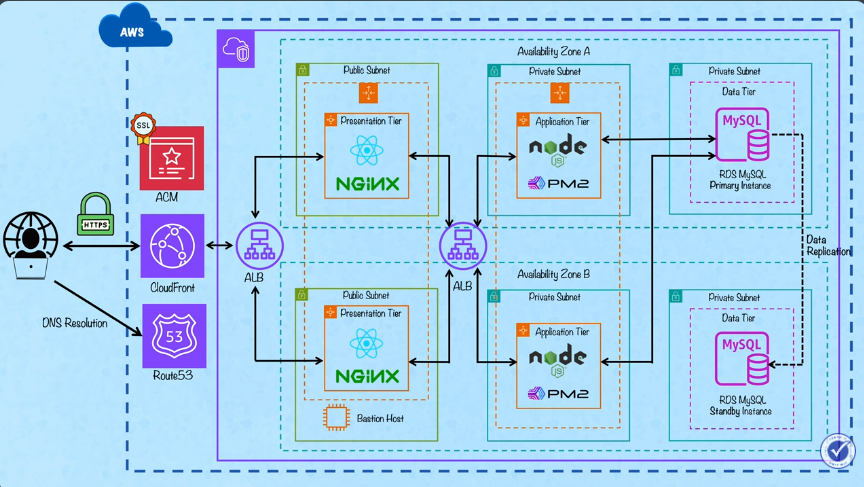

AWS
3 Tier Application

AWS
Deploying a 3-Tier Application Architecture in AWS
This guide explains how to deploy a production-style 3-tier architecture in AWS with:
- Route 53
- ACM (SSL)
- VPC (Public & Private Subnets)
- Bastion Host
- RDS MySQL (Multi-AZ)
- Presentation Tier (Frontend)
- Application Tier (Backend)
- Auto Scaling
- CloudWatch Monitoring
3-Tier Architecture
- Presentation Tier
- Public ALB
-
EC2 instances (Frontend)
-
Application Tier
- Internal ALB
-
EC2 instances (Backend - Node.js)
-
Data Tier
- RDS MySQL (Multi-AZ)
1️⃣ Create Route 53 Hosted Zone
Create Hosted Zone
- Domain Name: xyz.com
- Type:
- Public Hosted Zone (Public Access)
- Private Hosted Zone (VPC Only Access)
After creation:
- Copy assigned Name Servers (NS records)
- Go to external domain provider (e.g., GoDaddy)
- Replace existing nameservers with AWS NS values
2️⃣ Request Public SSL Certificate (ACM)
Navigate to:
AWS Certificate Manager → Request Certificate
Add domain names:
xyz.com
xyz.in
Choose:
DNS Validation
Create validation records in Route 53.
Wait until certificate status shows:
Issued
3️⃣ Create VPC and Subnets
VPC Configuration
- Availability Zones: 2
- Public Subnets: 2
- Private Subnets: 4 (2 per AZ)
- NAT Gateway: 1 (single AZ)
- Endpoints: Not used
4️⃣ Subnet Configuration
Enable for Public Subnets:
Auto-Assign Public IP → Enabled
Private Subnets:
Auto-Assign Public IP → Disabled
5️⃣ Security Groups Configuration
Bastion Host SG
Inbound: - SSH (22) → Allow from specific IP (Production Best Practice)
Presentation Layer ALB SG
Inbound: - HTTP (80) → 0.0.0.0/0
Note: HTTPS can be configured later using CloudFront + ACM.
Presentation Layer EC2 SG
Inbound: - SSH (22) → Bastion SG - HTTP (80) → Presentation ALB SG
Application Layer ALB SG
Inbound: - HTTP (80) → Presentation EC2 SG
Application Layer EC2 SG
Inbound: - SSH (22) → Bastion SG - TCP (3200) → Application ALB SG
Data Tier SG
Inbound: - MySQL (3306) → Application EC2 SG - MySQL (3306) → Bastion SG
6️⃣ Launch Bastion Host
EC2 → Launch Instance
- AMI → Amazon Linux
- Key Pair → Create new
- VPC → Public Subnet
- Security Group → Bastion SG
7️⃣ Create DB Subnet Group
RDS → Subnet Groups → Create
- Select VPC
- Select Private Subnets
8️⃣ Create RDS MySQL (Multi-AZ)
RDS → Create Database
- Engine → MySQL
- Deployment → Multi-AZ (Primary + Standby)
- Master Username
- Master Password
- Storage
- VPC
- DB Subnet Group
- Security Group → Data Tier SG
9️⃣ Connect to RDS
SSH to Bastion
Connect to MySQL
Create App Database & User
CREATE DATABASE appdb;
CREATE USER 'appuser'@'%' IDENTIFIED BY 'password';
GRANT ALL PRIVILEGES ON appdb.* TO 'appuser'@'%';
FLUSH PRIVILEGES;
All application operations should use appuser.
🔟 Setup Presentation Tier
Create Launch Template
- AMI
- Key Pair
- Public Subnet
- Presentation EC2 SG
User Data Script
#!/bin/bash
yum update -y
yum install nginx -y
systemctl start nginx
systemctl enable nginx
INSTANCE_ID=$(curl http://169.254.169.254/latest/meta-data/instance-id)
PUBLIC_IP=$(curl http://169.254.169.254/latest/meta-data/public-ipv4)
echo "Instance ID: $INSTANCE_ID" > /usr/share/nginx/html/index.html
echo "Public IP: $PUBLIC_IP" >> /usr/share/nginx/html/index.html
1️⃣1️⃣ Create Presentation Target Group
- Target Type → Instance
- Protocol → HTTP
- Port → 80
- VPC → Select VPC
- Health Check → /
1️⃣2️⃣ Create Presentation Load Balancer (Internet Facing)
ALB Configuration:
- Scheme → Internet Facing
- Subnets → Public Subnets
- Security Group → Presentation ALB SG
- Listener → HTTP → Forward to Presentation Target Group
1️⃣3️⃣ Create Auto Scaling Group (Presentation Tier)
- Launch Template → Presentation Template
- Subnets → Public
- Attach → Presentation Target Group
- Enable Health Check
- Enable CloudWatch
- Min Capacity → 2
- Max Capacity → 4
- Target CPU Utilization → 50%
1️⃣4️⃣ Test Auto Scaling
SSH to Presentation Instance:
Monitor CloudWatch for scaling activity.
1️⃣5️⃣ Setup Application Tier
Create Launch Template
- Instance Type → t2.micro
- Private Subnet
- Application EC2 SG
User Data Script
#!/bin/bash
yum update -y
yum install git nodejs npm -y
git clone <repository-url>
cd app
npm install
cat <<EOF > .env
DB_HOST=<rds-endpoint>
DB_USER=appuser
DB_PASS=password
DB_NAME=appdb
EOF
npm start
1️⃣6️⃣ Create Application Target Group
- Target Type → Instance
- Protocol → HTTP
- Port → 3200
- VPC → Select VPC
- Health Check → /
1️⃣7️⃣ Create Application Load Balancer (Internal)
- Scheme → Internal
- Subnets → Private Subnets
- Security Group → Application ALB SG
- Listener → HTTP → Forward to Application Target Group
1️⃣8️⃣ Create Auto Scaling Group (Application Tier)
- Launch Template → Application Template
- Subnets → Private
- Attach → Application Target Group
- Enable Health Check
- Enable CloudWatch
- Min → 2
- Max → 4
- Target CPU → 50%
1️⃣9️⃣ Verify Application EC2
SSH:
Bastion → Application EC2
Check logs:
2️⃣0️⃣ Update Presentation Tier (Frontend)
Create New Launch Template Version.
Updated User Data
#!/bin/bash
yum install git nodejs npm -y
git clone <frontend-repo>
cd frontend
npm install
cat <<EOF > .env
API_URL=http://<internal-application-alb>
DOMAIN=xyz.com
SUBDOMAIN=xyz.in
EOF
npm start
Update Launch Template Version in ASG.
2️⃣1️⃣ Deploy Latest Version
Auto Scaling → Presentation ASG
- Select Latest Launch Template Version
- Terminate Old Instances
Access:
http://xyz.com
2️⃣2️⃣ Setup CloudWatch
Create IAM Role
- Attach Policy → CloudWatchLogsFullAccess
- Attach Role → EC2
2️⃣3️⃣ Create Log Group
CloudWatch → Log Groups → Create
2️⃣4️⃣ Install CloudWatch Agent
Attach IAM role to EC2 instance.
Configure CloudWatch agent.
2️⃣5️⃣ View Logs
CloudWatch → Log Groups
Monitor:
- Application logs
- System logs
- Metrics
✅ Final Architecture Flow
Route53
↓
Public ALB
↓
Presentation ASG (Public Subnets)
↓
Internal ALB
↓
Application ASG (Private Subnets)
↓
RDS MySQL (Multi-AZ)
🎯 Production Recommendations
- Enable HTTPS (ACM + ALB)
- Use AWS Secrets Manager for DB credentials
- Enable Automated RDS Backups
- Use WAF for security
- Consider CloudFront for CDN
- Implement Infrastructure as Code (Terraform)
🚀 You now have a scalable, secure, production-ready 3-tier architecture in AWS.
Scenario Based Questions
Read and Write Separate Database (How to scale application to 1M users)

Scaling AWS RDS with Read Replicas in EKS Architecture
I want to understand how database architecture works in AWS. Suppose I have a web application hosted on AWS with an RDS database, and everything is functioning correctly.
In what scenarios should I use two separate databases — one primary database for write operations and another read replica for read-only operations?
How does this architecture work internally, and how can it be implemented in AWS?
1️⃣ Current Scenario: Single RDS Instance
All operations go to one database:
SELECT(Read)INSERTUPDATEDELETE
This works perfectly when:
- Traffic is low to medium
- Read/write ratio is balanced
- Database CPU and connections are within limits
🚨 2️⃣ When Do You Need a Separate Write DB and Read Replica?
You introduce Read Replicas when scaling read operations becomes necessary.
🔹 Condition 1: Heavy Read Traffic
Example:
- E-commerce application
- 10,000 users browsing products (reads)
- 500 users placing orders (writes)
- Reads are 20x more than writes
Problem:
- Primary DB overloaded handling
SELECTqueries - CPU spikes
- Slow queries
- Application performance degradation
👉 Solution: Offload read traffic to replicas
🔹 Condition 2: Reporting & Analytics Queries
If:
- BI team runs large
SELECTqueries - Long-running reporting jobs
- Heavy analytical workloads
These queries:
- Lock tables
- Consume CPU
- Impact production users
👉 Run them on a Read Replica
🔹 Condition 3: Scaling Without Sharding
Instead of vertically scaling (larger DB instance),
use horizontal scaling with read replicas — often more cost-efficient.
🏗 3️⃣ Architecture with Read Replica
┌────────────┐
│ Primary │
│ (Write) │
└─────┬──────┘
│
Replication
│
┌─────────┴─────────┐
│ │
┌────────────┐ ┌────────────┐
│ Read Replica│ │ Read Replica│
└────────────┘ └────────────┘
Application Flow
🔁 4️⃣ How Read Replica Works Internally
For MySQL / PostgreSQL:
- Asynchronous replication
- Binary logs (binlog)
Replication Flow
- Client writes to Primary DB
- Primary writes changes to binlog
- Replica reads binlog
- Replica applies changes
⚠ Important:
- Replication is asynchronous
- Small delay (milliseconds to seconds)
- Called replication lag
- Provides eventual consistency, not strong consistency
🎯 When NOT to Use Read Replicas
❌ Write-heavy workloads
❌ Applications requiring strict real-time consistency
❌ Systems that cannot tolerate replication lag
🆚 Multi-AZ vs Read Replica (Critical Difference)
🔹 Multi-AZ
- High Availability
- Standby DB
- Not used for reads
- Automatic failover
🔹 Read Replica
- Used for scaling reads
- Application connects to it
- No automatic failover (unless promoted)
⚙ 5️⃣ How to Implement Read Replica in AWS
Option 1: AWS Console
- Go to RDS
- Select your database
- Click Actions
- Choose Create Read Replica
- Select instance size
- Deploy
Option 2: AWS CLI
aws rds create-db-instance-read-replica \
--db-instance-identifier mydb-replica \
--source-db-instance-identifier mydb-primary \
--db-instance-class db.t3.medium
Option 3: Terraform (Recommended for DevOps)
resource "aws_db_instance" "primary" {
identifier = "mydb-primary"
engine = "mysql"
instance_class = "db.t3.medium"
allocated_storage = 20
username = "admin"
password = "password"
}
resource "aws_db_instance" "replica" {
identifier = "mydb-replica"
replicate_source_db = aws_db_instance.primary.identifier
instance_class = "db.t3.medium"
}
🧠 6️⃣ Application-Level Implementation (Most Important)
AWS does NOT automatically split read/write traffic.
Your application must handle it.
Example (Python Concept)
write_db = connect(primary_endpoint)
read_db = connect(replica_endpoint)
# Write operation
write_db.execute("INSERT INTO users VALUES (...)")
# Read operation
read_db.execute("SELECT * FROM users")
🏢 Real-World Example
Netflix-like workload:
- Browse catalog → Read
- Watch list → Read
- Signup → Write
- Like button → Write
If 90% traffic is reads:
📊 Scaling Strategy
Start simple:
If CPU consistently > 70% due to reads:
As traffic increases: